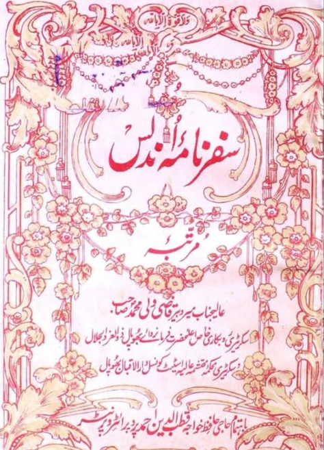

سفرنامہ اندلس
میر دبیر قاضی ولی محمد سرکاری عہدیدار تھے جن کا تعلق ریاست بھوپال کے علمی گھرانے سے تھا۔ وہ ایک وسیع المطالعہ شخص تھے اور تاریخ و جغرافیہ سے گہری دلچسپی رکھتے تھے۔ اپنے علمی ذوق اور مشاہدے کی قوت کی بدولت انہوں نے یورپ اور بالخصوص قدیم اسلامی تہذیب کے مراکز کی سیاحت کی اور اپنے مشاہدات کو قلمبند کر کے اردو سفرنامہ نگاری میں ایک اہم اضافہ…

1
سفرنامہ اندلس
سفرنامہ اندلس

2
جبل الطارق
جبل الطارق

3
حوض مسجد قرطبہ
حوض مسجد قرطبہ

4
باب شمس طلیطلہ
باب شمس طلیطلہ

5
حمام زرید
حمام زرید

6
شہر الحامہ
شہر الحامہ

7
القصر اسلامی القلعہ نہر الانہار
القصر اسلامی القلعہ نہر الانہار

8
ESTOCADA A VOLAPIÉ
بیل پر تلوار کا آخری وار

9
سفید لیس کی اوڑھنی پہنے ہوئے ایک خاتون کی تصویر۔

10
مرغ بازی
مرغ بازی

11
مجلس آبیانہ بلنشیر
مجلس آبیانہ بلنشیر

12
غرناطہ - الحمرہ - جبل سید کا نظارہ
غرناطہ - الحمرہ - جبل سید کا نظارہ

13
پہاڑی پر قلعے کے کھنڈرات، برج اور فصیل کے گرد ہریالی۔

14
حرم سرا الحمرا کا منظر
حرم سرا الحمرا کا منظر

15
دیوان خاص الحمر غناط
غرناطہ کے الحمرا کا دیوان خاص

16
دیوان خاص
دیوان خاص

17
دار الاساد الحمر، کا ایک گوشہ
الحمرا کے دار الاساد کا ایک گوشہ

18
الحمرا کی گنبد والی بارہ دری اور ستونوں والا صحن

19
برج سجن الحمرا
الحمرا کا برج سجن

20
الحمرا کے صحن میں محرابوں اور ستونوں کے درمیان شیروں کا فوارہ

21
بارہ دری دارالاساد کا روکار الحمراء
الحمرا کے دار الاساد کی بارہ دری کا سامنے کا حصہ

22
مالقہ
مالقہ

23
الحمرا کے نقشین محراب سے نظر آتے درخت اور کاشیوں والی دیواریں

24
دار البرکتہ الحمرا
الحمرا کا دار البرکتہ

25
پرانی اینٹوں والی عمارت کا محرابی دروازہ اور لوہے کا پھاٹک

26
جنت العریف غرناطہ
غرناطہ کی جنت العریف

27
جو مہرہ کا ایک حصہ
جو مہرہ کا ایک حصہ

28
اسلامی مکان محلہ البازین (غرناطہ)
غرناطہ کے محلہ البازین کا اسلامی مکان

29
بازار القیصاریہ (غرناط)
بازار القیصاریہ (غرناط)

30
دروازۂ الروح (غرناط)
دروازۂ الروح (غرناط)

31
بیت تیرو (غرناط)
بیت تیرو (غرناط)

32
اسلامی پھاٹک (رندہ)
اسلامی پھاٹک (رندہ)

33
اسلامی مکان (رندہ)
اسلامی مکان (رندہ)

34
فاتحین مغرب
فاتحین مغرب

35
مسافرانِ اُندلس
مسافرانِ اُندلس

36
سوق اعظم طنجه
سوق اعظم طنجه

37
ایک پرانا محلہ قرطبہ
ایک پرانا محلہ قرطبہ

38
27 - Córdoba - Paseo del Gran Capitán.
قرطبہ — پاسے او دیل گران کاپیتان

39
جامع مسجد کی ایک صف قرطبہ
جامع مسجد کی ایک صف قرطبہ

40
سفید مکانوں والی تنگ پتھریلی گلی، بالکونیوں پر پھول اور لوگ۔

41
تنگ گلی میں لوگوں کے درمیان کھڑی گائے، سفید مکان اور فانوس۔

42
قرطبہ کے قریب پتھر کا مضبوط قلعہ نما برج اور فصیل۔